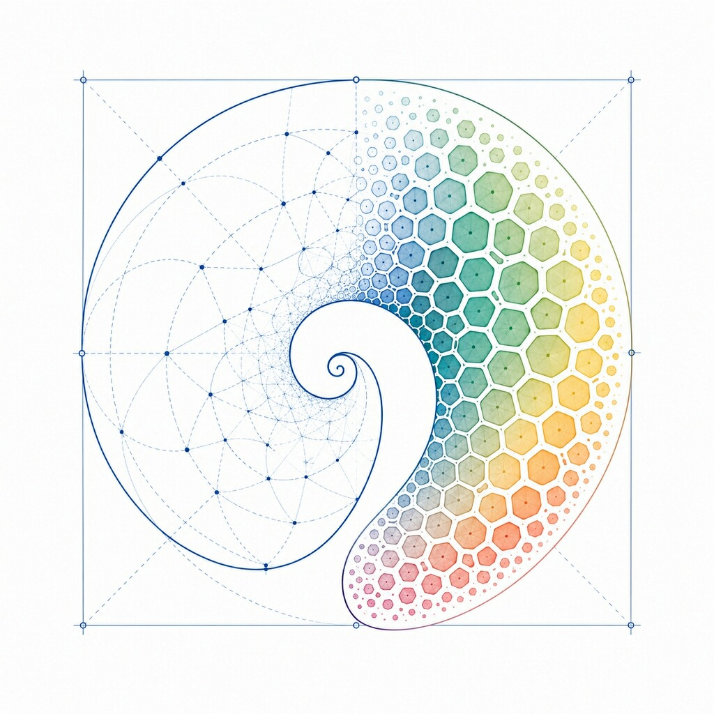

Abundant Biology
Building the tools to program living systems.

Our mission is to make realistic lab-grown human tissue as cheap and abundant as possible. We believe there are few engineering goals that will better reduce human suffering and promote human flourishing. From improved drug screening, to accelerated infectious disease research, to regenerative therapies for combating human aging, the potential is nearly limitless. However, current technologies are expensive, difficult to reproduce, and limited in complexity. Our goal is to make realistic tissue a reliable and abundant commodity. We would love your help to get humanity there.
Tissue development proceeds after exposure to special molecules called morphogens, as well as electrical signals. These signals form spatial patterns that communicate to cells what identities to take on and when to divide. Once initial patterning forms, much of tissue development is self-organizing. This is important because it means that tissue development does not need to be micromanaged so much as it needs to be prompted.
Much like how prompt engineering helped unlock the intelligence of language models, we believe a prompting interface for developmental biology is the key to unlocking the tissue-building intelligence that 2.1 billion years evolution has encoded in the genomes of multicellular organisms. We are building an error-correcting feedback system that tightly controls spatial and temporal expression of many types of morphogens and electrical patterns in organoids, mimicking what occurs naturally in developing embryos to create complex tissues.
In particular, we are building a hardware device that 1) senses the current developmental or bioelectric state of an organoid, and 2) tightly controls morphogen expression and bioelectric activity in response to the current developmental state. We believe this feedback-based approach will create an unprecedented level of precision that will eventually allow us to scale from today’s tiny “organoids,” barely usable for drug testing, to functioning tissue that can be transplanted directly into patients.
If you are interested in helping us relentlessly commoditize realistic lab-grown tissue, please contact us below. We are always interested in collaboration and working with the best talent.